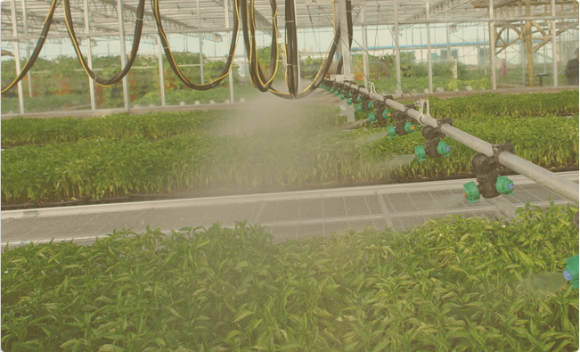
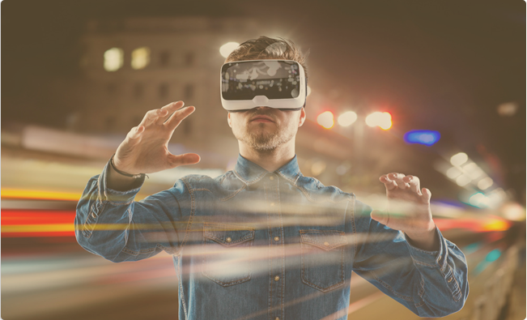
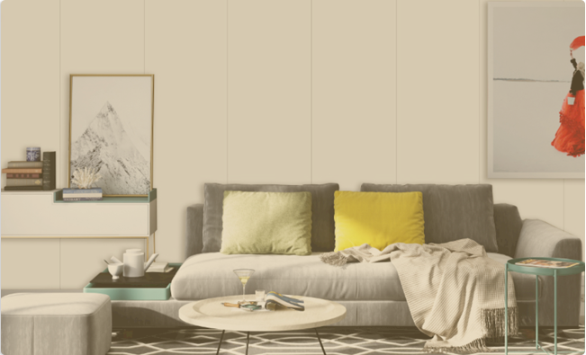
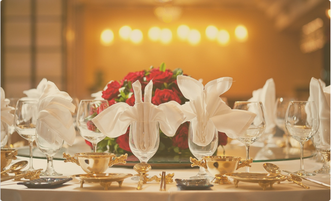
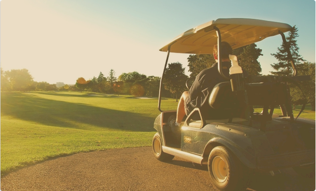
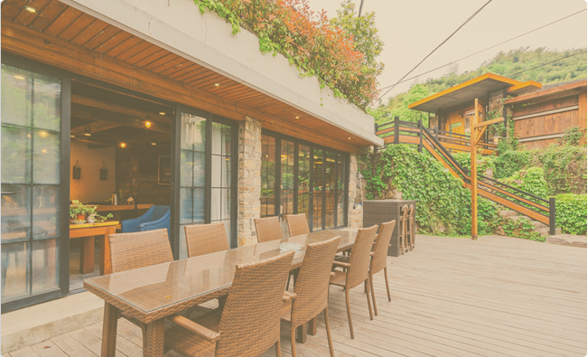
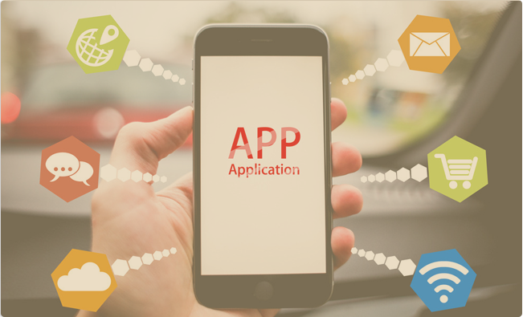
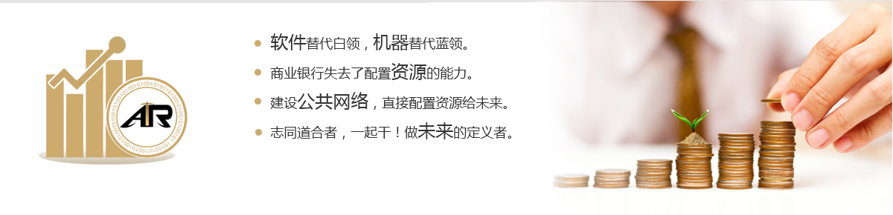
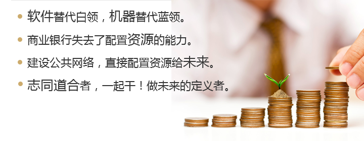

项目投资方向
生活服务
智能农业
智能养老

智能硬件
人工智能
家居装修
智能广告
智能社交
智能教育
智能体育
智能餐饮
智能传媒
休闲娱乐
智能民宿
母婴亲子
智能景区
- 智能生活平台是依托云计算技术的存储，在家庭场景功能融合、增值服务挖掘的指导思想下，采用主流的互联网通信渠道，配合丰富的智能家居产品终端，构建享受智能家居控制系统带来的新的生活方式。
- 多方位，多角度的呈现家庭生活中的更舒适，更方便，更安全和更健康的具体场景，进而共同打造出具备共同智能生活理念的智能社区。
- 智能生活平台可以自由的与主流智能家居品牌产品互通，任何时候，任何场合，家庭用户可以自由的通过无线链接Internet，直接上互联网远程查询到相关所需信息并具备社交互动特点。智能生活具备延展性和自我成长性，借助统一的云服务实现各种智能家居产品与各种专长的服务部门和机构紧密性合作，迅速构建出智能生活门户，从生活资讯，到健康诊疗;从远程门锁控制，到合理家庭用电策略建议部署，从严谨的家庭安防，到细微的家庭环境质量分析建议部署，全方位的体现智能生活的精彩。
- 依托智能生活平台，足不出户智能生活用户便能了解社区附近生活信息，通过广泛使用的智能手机可以一键连通商家服务热线，享受由他们提供的咨询和上门服务:借助各种智能家居终端产品定时传递自己的身体健康数据，云服务后台的专家及时会诊，及时提醒;定时智能门锁汇报当天的访客情况，甚至在您不在家的时候代为签收快递;您的智能灯泡也会及时汇报您当月的用电情况，并给出更合理的用电方案;您的冰箱将随时提醒您的采购项目和对应的健康指数，指导您实现合理饮食。
- 智能生活是指利用现代科学技术实现吃、穿、住、行等智能化，将电子科技融于到日常的工作、生活、学习及娱乐中。

申请加入
- 答:荷兰式立体农业+智能技术的引用。全程生产可追溯,安全,健康,高产。工作环境友好。
- 答:募集10000亿AIR,出让20%原始股权。未来,智能农业项目以10万亿以上AIR赎回原始股权。
- 答:50%注入公共网络,30%归运维方(含所有员工)。
- 答:完成AIR募集,全国最牛的技术团队抢着做。
- 在荷兰与比利时边境附近的土豆地里，荷兰农民雅各布•范登•伯恩（Jacob van den Borne)正坐在巨大收割机的机舱里，他面前的仪器面板看起来就像《星际迷航》中星际飞船"企业"号的操控装置。在距离地面3米多高的地方，他正在监测两个无人机器，分别是在田里游荡的无人驾驶拖拉机，以及正在空中飞行的四轴飞行器，后者可提供详细的土壤化学、水含量、营养以及生长数据，并测量每株植物乃至地下每个土豆的生长态势。 伯恩的生产数据证明了这种"精准农业（precision farming）”广的巨大潜力。每英亩（约合0.4公顷）土豆地的全球平均产量约为9吨，而伯恩田地的产量超过20吨。同样引人注目的是，即便如此高产，伯恩的投入却非常低。大约20年前，荷兰人做出了 "可持续农业"的国家承诺，其口号是"用1半资源生产出2倍的粮食"。自从2000年以来，伯恩和许多荷兰农民都减少了关键作物对水的依赖，减少幅度达90%。他们几乎完全放弃了在温室中使用化学杀虫剂的做法，自2009年以来，荷兰的家禽和家畜生产商已将抗生素的使用减少了60%。 荷兰威斯兰德（Westland)农民住宅及其周围环绕的大量温室，荷兰已经成为农业创新领域的领导者，并为战胜饥饿开辟了新的途径。 威斯兰德已经成为荷兰的"温室之都”，大量人工照明给这里带来一种超凡脱俗的气息。诸如此类的气候控制农场可以全天候种植作物。 还有一个值得惊奇的理由：荷兰是个人口稠密的小国，每平方英里有1300多名居民。为此有人认为，要想发展大规模农业，荷兰几乎需要将所有资源都投入其中。然而，荷兰已经成为仅次于美国的全球第二大食品出口国，而其国土面积仅是美国的1/270。那么，荷兰人到底是怎么做到的？ 从空中可以看出，荷兰与其他粮食大国并无相似之处。在这些产粮国家，有许多密集耕作的田地，按照农业标准来看，大部分田地规模都较小，而且不时被繁忙的城市和郊区所隔断。而在荷兰的主要农业区，几乎没有成片的土豆地、温室以及养猪场，也没有深入天际的摩天大楼、生产工厂或城市扩张。全国超过半数的土地被用于农业和园艺。 看起来像巨大镜子的建筑在乡间伸展，在阳光照射下闪闪发光，而当夜幕降临时，诡异的室内灯光开始闪烁。事实上，它们是荷兰非凡的温室建筑群，其中有些占地达175英亩（约合70公顷）。这些可以控制气候的农场使距离北极圈仅1600公里的国家成为西红柿出口的全球领导者。荷兰也是世界上最大的土豆和洋葱出口国，全球第二大蔬菜出口国。在全球蔬菜种子贸易中，超过1/3的种子来自荷兰。 随着对鸡肉需求的增加，荷兰公司正在开发新技术，使家禽产量最大化，同时确保符合人道的养殖条件。这个高科技肉鸡设备容纳了 15万只鸡，囊括了从孵化到宰杀的全过程。 这些令人震惊的数字背后有个智囊团，它就是瓦格宁根大学与研究中心(WUR),它位于阿姆斯特丹东南80公里处。格宁根大学与研究中心是世界上最大的农业研究机构，它也是"食谷"（Food Valley)的重要节点。所谓"食谷"，是指荷兰农业科技初创企业和实验农场的广泛集群。这个名字对应加州的硅谷，瓦格宁根大学与研究中心效仿斯坦福大学，在学术界和创业界的合并中扮演着的突出角色。 瓦格宁根大学与研究中心下属植物科学集团 (Plant Sciences Gro叩）的董事总经理恩斯特• 范登•恩德（Ernst van den Ende)具体阐释了"食谷”代表的混合含义。恩德是一位著名学者，曾在一家时髦咖啡馆里充任咖啡师，他是植物病理学的世界权威。但是他说："我不只是一个学院的院长。我的半数时间花在经营植物科学集团上，而另一半则负责管理涉及商业合同研究中的9个独立业务单位。只有这种科学驱动和市场驱动相混合的模式，才能应对未来的挑战。" 当沐浴在上方、旁边或各种组合的LED灯下时，西红柿的生长最好吗？植物学家汉克•卡尔克曼 (Henk Kalkman)正在Bleiswijk的Delphy改进中心寻找答案。学者和企业家之间的合作是荷兰创新的关键驱动力。 什么样的挑战？恩德表示，在未来40年时间里，地球必须生产出"比历史上所有农民在过去8000年里收获的更多食物”。这是因为到2050年，地球上的人口将会达到100亿，而现在为75亿。如果农业产量没有大幅增加，与之相应的水和化石燃料消耗没有大量减少，那么10亿以上的人将面临饥饿。饥饿可能是21世纪最紧迫的问题，而在"食谷"工作的梦想家们相信，他们已经找到了创新的解决方案。 恩德坚持认为，避免灾难性饥荒是可以实现的。他的乐观来自于全球140多个国家和地区的1000多个项目反馈，以及与六大洲的政府和大学签署的正式协议，以分享和实施这些项目。非洲干旱？ 恩德表示："水并不是最根本的问题，贫瘠的土壤更为关键。缺乏养分可以通过培养与某些细菌共生的植物来抵消，从而产生肥料。"饲养动物的饲料价格飞涨？他认为："可以喂给它们吃蚱蜢。"一公顷土地每年可产出1吨的大豆蛋白质（普通的牲畜饲料），而同等数量的土地可以产生150吨的昆虫蛋白质。 谈到LED照明，它允许在精确控制气候的温室里进行24小时培育。然而，恩德又发现了一种误解，即可持续农业意味着人类对自然的干预最小化。恩德惊呼"看看巴厘岛！"在至少一千年的时间里，那里的农民已经在稻田里养鱼和鸭子，这是一种完全自给自足的食物系统，人类利用双手在山坡上打造出的复杂运河系统进行灌溉。恩德说："这就是可持续发展模式！" 在瓦格宁根大学的牛奶场，这样的旋转挤奶机可以让操作员1小时内为150头奶牛挤奶。这里的研究人员正寻求在人口密集的荷兰解决奶牛养殖所带来的挑战。 位于海牙的旧工厂里，在这个有屋顶的温室里，利用鱼类废物充当肥料的西红柿植株长得比农民保罗•詹尼特（Paul Jeannet)更高。该项目始于2016年，包括一个农产品市场和一个酒吧。 在荷兰的每次转型中，可持续农业的未来都不是在大公司董事会的会议室里决定的，而是在数千个中等规模的家庭农场中成型。你可以在泰德 (Ted Duijvestijn )和他的兄弟彼得（Peter)、罗纳德（Ronald )以及雷科（Remco)等人的"天堂"里看到这样的场景。像巴厘岛人一样，泰德几兄弟建造了自给自足的食物系统。在这个系统中，人类的聪明才智与自然潜能之间达到近乎完美的平衡。 在德尔夫特（Delft)旧城附近，泰德有个占地 14.5公顷的温室，游客们漫步在成排深绿的番茄藤中，它们可以长到6米多高。这些植物并非根植于土壤中，而是由玄武岩和白垩纤维织成的纤维，这些长满果实的植株重量都很重，有15个品种，能够适合最挑剔的味蕾。2015年，由园艺专家组成的国际评审委员会称泰迪等人是世界上最具创新精神的番茄种植者。 小小的荷兰已成为全球第二大农业大国，其食品出口仅次于美国。而实际上，荷兰可用农业耕地只是其他国家的一小部分。它是如何做到这一点的？通过使用世界上最高效的农业技术。 在过去30年里，荷兰番茄产业成为世界领袖（平均产量），其每公顷番茄产量比其他地方更高。荷兰其他主食作物的产量也非常高。按产量排名，中国用于耕种番茄的土地比任何其他国家都多，为此其总产量也最多。无论是在耕地面积还是产量方面，美国都排名第三位。尼日利亚是番茄种植第三大国家，但其产量却比较低。 荷兰农业主要依赖温室，农民可以密切控制生长条件，并使用更少的资源（如水和肥料）。利用大规模的创新，比如水培农业（在营养丰富的培养液中种植植物，无需使用土壤）可以减少径流，节约用水和资金。自从在2004年重新安置和改造他们70年的农场以来，泰德等人就已经宣布在各个方面资源独立。 这个农场几乎可以生产其所需的所有能源和肥料，甚至还有些用于作物分销的包装材料。这里全年都保持在最适宜的温度下，由地热含水层产生的热量供热，在荷兰至少有一半的地方如此。 唯一的灌溉水源是雨水，泰德精心管理着种植计划。从他的纤维根植物中收获每公斤番茄需要不到4加仑的水，而在开放的田地里需要16加仑。 每年，每种作物都要播种重新生长，而旧的藤蔓则被加工成包装箱。很少有害虫能够进入温室，它们受到成群贪婪守卫者的"欢迎"，比如凶猛的 Phytoseiulus persimilis,这是一种掠食性螨，它对番茄毫无兴趣，但却对数百种破坏性的蜘蛛螨很有"胃口"。在我参观泰德等人的农场后，他参加了农民和瓦格宁根研究人员之间的会议。他对我说:"这就是我们不断想出创新方法保持继续前进，并不断改进的原因。来自荷兰各地的人们聚在一起讨论不同的观点和共同的目标。没有人能知道所有问题的答案。" 在荷兰伯恩家的大棚里，两个金发碧眼的孩子坐在土豆山上。伯恩家的2个女孩在自家的土豆山上玩耍，这里的土豆产量是全球平均水平的两倍。至于原因吗?无人机和其他工具被用于评估单个植物的健康状况，并确定它们具体需要多少水和营养才能茁壮成长。 在瓦格宁根大学和研究中心的AlgaePARC上，茹德•韦洛（RuudVeloo)监测着实验"光生物反应器"。光促进微藻的生长，微藻则被用来产生蛋白质和脂质，这是许多食物链的基础。 寻找生死问题的答案，造就了荷兰最具创新力的公司之一。半个世纪前，简•科佩特（Jan Koppert)在他的土地上种植黄瓜，并使用有毒的化学啧雾来抵御害虫。当有医生宣称他对杀虫剂过敏时，科佩特开始了解所有昆虫和蜘蛛的天敌。如今，科佩特生物系统公司（Koppert Biological Systems)成为生物害虫和疾病控制的全球领跑者，在96个国家拥有1330名员工和26个国际子公司。 科佩特的公司可以为你提供瓢虫幼虫，它们成熟后会成为蚜虫的天敌。这家公司也出售装有2000个掠食性螨的瓶子，它们能在植物上捕捉蜘蛛螨，并把它们吸干。此外，还有装有5亿条线虫的盒子，它们会对那些破坏蘑菇的苍蝇幼虫发动致命袭击。科佩特还有狂热的大黄蜂军团，没有任何人工授粉的方式能与蜜蜂的高效相匹配，这些蜜蜂在不同的花丛中飞行，采集花蜜来供养它们的蜂王，并帮助植物授粉。科佩特的每个蜂巢每天可以访问50万朵花。使用蜜蜂的农民通常报告称，其水果产量和重量分别增加了20%到30%,而成本还不到人工授粉的一半。 荷兰瓦格宁根大学里，学生穿着白色实验服检查植物。瓦格宁根大学与研究中心的教师和学生表示，知识是荷兰最有价值的出口产品，那里半数的研究生都来自其他国家，而有些国家面临着反复出现的饥荒威胁。 瓦格宁根大学与研究中心坐落于"食谷"，那里是荷兰农业科技版硅谷，是荷兰农业取得成功的关键。这所大学也在全球范围内输出他们的 创新方法。地图显示该大学在欧盟以外展开的研究项目，有些项目在多个国家或地区都很活跃。拉丁美洲：过渡区，热带森林正受到农业和其他土地利用方式的威胁，这个项目旨在找出管理农场和森林之间过渡地带的方法。肯尼亚：人工授精，小型乳品饲养者获取AI服务和高品质母牛的渠道有限，这个项目研究如何更好地访问以改善食品安全。哈萨克斯坦：蒲公英橡胶，橡胶工业导致亚洲大量森林砍伐，这个项目寻求从蒲公英的 根中寻找天然橡胶。加纳：蔬菜生产，GhanaVeg 项目的目标是发展可持续竞争的蔬菜市场，以满足不断增长的中产阶级的需求。埃塞俄比亚：更好的土豆，对于根茎作物来说，这里的产量很低作物，这个项目的目的是改善种子质量，并分析这种变化带来的经济后果。印度：大米创新，劳动密集型、低水位种植水稻最近几十年里产量不断增加，这个项目研究农业政策如何能进一步刺激创新。孟加拉国：水的质量，气候变化导致洪水爆发更频繁，这个项目研究水传播病原体的防治。中国：安全运输，从荷兰鹿特丹到重庆的新铁路经历季节性的极端寒冷和炎热，这个项目目的是确保沿途食品安全。印尼：景观恢复，森林正在被开发和发展农业而破坏，这个项目是通过公私合作优化可持续的商业模式。 荷兰的农业技术非常先进，而大多数技术都取决于种子。而且，围绕农业未来的争论，也没有比荷兰的争议更激烈。其中最主要的是转基因生物的发展，从而产生更大、更抗害的作物。对它们的批评者来说，转基因生物将会引发"弗兰肯斯坦式的场景' 对活体实验充满了不确定性后果。 荷兰企业是种子行业的世界领导者，2016年出口额接近17亿美元。然而，他们没有销售转基因产品。 KeyGene公司总裁Arjen van Tunen表示, 欧洲受到严格监管的转基因生物领域，研发新的种子品种可能需要花费1亿美元，耗时12到14年。相比之下，在未来5到10年里，在分子繁殖方面取得的最新成就有望带来显著的收益，其开发成本低至10万美元，而且很少超过100万美元。它是一万年前"新月沃地"(Fertile Crescent,中东两河流域及附近)农民所用方法的改良。 另一个荷兰育种家RijkZwaan的销售目录中有超过25种蔬菜高产种子，许多蔬菜都能自然抵御主要害虫。海伦•博斯（HeleenBos）负责该公司的有机账户和国际开发项目。她没有谈论这样的事实：RijkZwaan在温室中播下番茄种子，成本还不到0.5美元，但却可以产出70多公斤番茄。相反，她称全球依然有数亿人缺乏足够的食物，其中大部分是妇女和儿童。 番茄种植者 Jasper Oussoren检查了这台发电机，它可将天然气转化为电力以供照明。发电过程中的副产品——热量和二氧化碳都被捕获，并用于为温室供暖，并促进植物生长。 与”食谷"许多企业家那样，博斯曾在世界上许多最贫穷的国家的野外和城市工作过。在过去的30年里，她曾在莫桑比克、尼加拉瓜和孟加拉国工作，知道饥饿和毀灭性的饥荒都是真实存在的威胁。她说:"当然，我们无法立即实现在荷兰看到的那种超高科技农业模式，但我们很好地引入了可以带来巨大影响的中等技术解决方案。"她引入了相对廉价的塑料温室，与那些开放农田相比，这些作物的产量增加了两倍，而且更不容易受到害虫和干旱的影响。 自2008年以来，RijkZwaan就在坦桑尼亚马扎罗山附近50英亩的试验田中展开了一项育种项目。这些种子被送到荷兰进行质量控制测试，提高种子发芽率、纯度和对病虫害的抵抗力。在肯尼亚、秘鲁和危地马拉，相关合作项目也在进行中。博斯说:"我们试图为这些国家开发符合其特定环境的种子。”但她强调，起点并不是那种自上而下的方法，它注定要以外国援助项目的形式进行。她说我们与小种植者们进行了持续的、非常重要的对话，内容包括他们的需要、所面临的天气、土壤条件以及成本等。” 荷兰是仅次于美国的全球第二大食品出口国，这在一定程度上 要归功于像Greenpack这样的现代加工公司，它们连续不断地将新鲜的水果和蔬菜运送到世界各地的市场。大部分产品都是在其他国家生产的，大量运往荷兰鹿特丹港，包装后通过空运、铁路和海运进入市场。 对有些荷兰研究人员来说，担心人们受到饥饿威胁部分来自于该国自身所受过的创伤：荷兰是最后一个遭受严重饥荒的西方国家，在第二次世界大战的最后一年，在德国占领的土地上，有近2 万人死于饥荒。几十年后，在瓦格宁根大学与研究中心的可持续发展和食品安全名誉教授Rudy Rabbinge的帮助下，该校对教师、学生以及课程 中做出了广泛的改变，使学校变成了他所称的"世界性大学，而不仅仅是荷兰人的大学"。如今，在这所大学的学术和研究活动中，很大一部分都集 中在贫穷国家面临的问题上。 大约有45%的研究生（包括将近2/3博士生）都是外国留学生，他们来自100多个国家和地区。以中国人和印尼人为首的亚洲人，数量几乎超过了几 乎所有非荷兰留学生的总和。在非洲、亚洲和拉 丁美洲的农业部门，许多瓦格宁根大学与研究中心的校友担任着高层。在学校的食堂里，我和该校几名最有前途的学生坐下来交流。这三人来自 乌干达、尼泊尔和印尼，而且都是年轻女性。 瓦格宁根大学与研究中心下属世界土壌博物馆馆长的史蒂芬•曼特尔（Stephan Mantel)， 这个博物馆收集了来自世界各地的1200个土壤样本，对于研究人员和土地使用管理人员来说，这些都是宝贵的资源。 当我问及她们如何来到这里的时候，莉亚（Leah Nandudu)称："我在乌干达上学的时候，遇到 了瓦格宁根的校友。她是表型（phenotyping) 专家，主要对植物的特性和潜力进行详细描述。他鼓励我，非洲人也可以做这些事情。她代表着未来，那里也是我们需要前往的地方。"这次会面 最终使莉亚获得了瓦格宁根大学与研究中心的奖学金。她的父亲拥有自己的农场，分种咖啡和香蕉。母亲在一所小学教英语，并在农场帮忙。她说："今天，我们面临着所有农民面临的问题，而 且更糟糕，尤其是气候变化带来的后果。" 普拉格雅（Pragya Shrestha)在尼泊尔农村长大，那里有些地区多年来始终依赖农药和化肥。到目前为止，更健全、更可持续性的方法几乎没 有取得进展。她说"这是一个政治问题。她说。由于缺乏公共资金，新的耕作方法无法实施。这也是一个人口问题，将土地分割成越来越小的地块，导致效率低下，浪费人力，而且收入也更少。 " 威斯兰德的农民很少担心天气，那里80%的 耕地都在温室里。该地区占荷兰园艺生产的近一半。 蕾娜（RennaElianaWarjoto)来自印度尼西亚第三大城市万隆。她说："人们不信任那些来自国外的想法，农民已经习惯了他们的生活和收入方式，他们很难相信事情会有所不同。"1944年至1945年，万隆所在的爪哇岛发生了一场致命饥荒，造成约240万人死亡。2005年，毀灭性的地区作物歉收困扰着印度尼西亚。由于干旱和重要进口商品的价格升高，尼泊尔农村地区的粮食供应周期性地出现短缺。2011年，非洲之角的饥荒影响了1300万人，而在2017年，160万乌干达人在没有国外快速援助的情况下，也陷入饥饿。 所有这些事件在当时都是不可想象的，但与未来可能发生的事情相比，它们就显得"小巫见大巫"。联合国数据显示，在三个非洲国家和也门红海的饥荒中，受饥荒威胁的人数就已经超过了2000万，而且正在不断上升。联合国紧急救援协调员史蒂芬.奥布莱恩（StephenCTBrien)在3月警告说："我们正面临自联合国成立以来最大的人道主义危机。"莉亚表示:"我们最困难的任务是改变本国 人民面临危机的看法，以及我们必须采取什么样的行动来解决这个问题。当我回国的时候，这就是我的工作。我们不能脱离现实。” 海牙前工厂屋顶上的农场，它可以在自给自足的循环中提供蔬菜和鱼。鱼的排泄物可充当肥料，而这些植物可以过滤水。当地的餐馆自豪地提供蔬菜和"城市游泳者"。 在瓦格宁根以南约6400公里处，位于东非大裂谷一个家族式豆场里，来自荷兰农业技术公司 SoilCares的团队正在测试一种小型手持设备的功能。在启动手机上的应用后，该设备可分析土壤中的pH值、有机物和其他属性，然后将结果上传至荷兰的一个数据库，并可在10分钟内返回一份关于最佳肥料使用和营养需求的详细报告。该报告的成本只有几美元，它提供的投入建议可以帮助那些从未获得过任何土壤取样的农民获得更多利润，并减少作物损失。 全世界约5.7亿个的农场中，只有不到5%的农场样本可以进入土壤实验室，这是荷兰人所认为的一项挑战。瓦格宁根大学与研究中心动物科学集团（Animal Sciences Group)主管马丁 •朔尔滕 (Martin Scholten )说："对发展中国家来说，我们的工作意味着什么？这个问题总是在这里被提出，也是每次谈话的必要组成部分。
问：什么是智能农业？
问:募集资金?
问:剩余股权分配?
问:谁来做?
"弹丸小国”荷兰农业技术先进的可怕中美都得佩服
- 如果老人走出房屋或摔倒时，智能居家智能养老养老系统中的老顽童手表设备能立即通知医护人员或亲属，使老年人能及时得到救助服务；当老年人因饮食不节制、生活不规律而带来各种亚健康隐患时，智能居家养老设备的服务中心也能第一时间发出警报；智能居家养老设备医疗服务中心会提醒老人准时吃药和平时生活中的各种健康事项；如果灶上烧着东西却长时间无人问津，那么安装在厨房里的传感器会发出警报，如果报警一段时间还是无人响应的话，这时候煤气便会自动关闭；老人住所内的水龙头一旦24小时都没有开启过，那么报警系统就会通过电话或短信提醒老人的家人。最重要的是，“智能居家养老”可以在老人身上安装GPS全球定位系统，子女再也无须担心老人外出后走失。 “智慧养老”能全方位监测老人的健康状况。比如手腕式血压计、手表式GPS定位仪等，不仅能随时随地监测老人的身体状况，也能知晓他们的活动轨迹；通过给家中的厕所进行改装后，系统便会自动监测老人的尿液、粪便等，这样一来，老人在上厕所的同时，也完成了医疗检查。系统监测到的数据将直接传送到协议医疗单位的老人电子健康档案，一旦出现数据异常，智能系统会自动提醒老人及时体检。 如果老人想休闲休闲，系统会告知老人当天的电视节目、社区开展的活动等内容；如果家中房门上安装了娱乐传感器，老人进门时，便会自动播放主人喜爱的音乐，并适时调节室内暖气和灯光。 智能养老服务系统平台包含：老人、民政局、街道办、社区服务中心四个业务角色，民政局、街道办、社区服务中心通过专用网络建立高效联动机制。 根据社区内老人的情况，为加入社区呼叫系统（以下简称入网）的老人发放老人专用手机或其他 呼叫中心养老平台终端，并将采集到的老人档案信息上传于系统内。当老人通过手机固定一个拨号键拨打“养老服务中心服务统一电话号码”时，服务中心坐席电脑上就会弹出老人信息(包括：智能养老即“智能居家养老”[Smart home care])，它是新近流行的一种养老概念。最早由英国生命信托基金会最早提出，被统称为全智能化老年系统，该养老模式能让老人在日常生活中不受时间和地理环境的束缚，在自己家中过上高质量高享受的生活。 智能养老系统(Intelligent home care system)基于物联网技术，在居家养老设备中植入电子芯片装置，使老年人的日常生活处于远程监控状态。 具体流程如下： 起始：老人在家需要生活方面服务、有病求救时，通过老人手机上的指定按键即可向社区呼叫平台发起服务请求，智能养老服务中心坐席电脑上会弹出老人信息： 只按键不通话——老人在手机上按键后挂机，坐席电脑上弹出老人信息（包括：名字、地址、联系电话、儿女亲属电话、所在街道的社区、有无病史、历史需求记录等等）；之后，控制中心坐席人员回拨老人电话，确认服务内容，并及时采取有效地帮助服务等 按键后通话——老人在手机上按键后等待通话，坐席电脑上弹出老人信息（包括：名字、地址、联系电话、儿女亲属电话、所在街道的社区、有无病史、历史需求记录等等），坐席人员接通电话并与老人通话，确认服务内容。

- 用人工智能来应对客户多变的定制需求，10秒钟规划出行程，大到飞机火车，小到景点公交，全部安排妥当。 连接200+以上OTA和B2B网站，数据涵盖全球8000+城市的机票、火车、酒店、大巴、租车、包车等品类，每一个产品均可全网比价，快速找到最优价格。 提供技术将您的企业数据接入妙计系统，包括个性化的POI、经典路线、地接活动等，不仅能保留您的独家资源，还可以参与路线规划和价格核算。 根据你的业务需求，你可以选择导出简洁的word报价单，或者实用的excel行程单，更可以一键导出丰富多彩的路书，并且我们将为你保存每一个导出的版本。 针对旅游定制专门打造的聊天系统，提供贴合行程的各类咨询卡片，降低定制师与客户的沟通障碍。 您可以根据自身情况选择APP、微信小程序或接入SDK，建立企业自己的沟通平台。 系统结构可完全根据企业需求深度定制，遵循您的业务流程和操作习惯，不只是更换一个logo这么简单。 为了实现更高效的用户沟通，人工智能也被应用其中。通过人工智能算法把数百万旅游目的地、活动和餐馆进行组合分类，一旦系统了解到用户的首选目的地，就可以利用用户的旅游偏好，给出每日行程和时间安排的建议。用户可以在几分钟内，生成个性化、细致到小时的度假行程，里面包括了航空的航班、酒店和其它服务。企业和客户之间的充分沟通是非常重要的，数据显示，部署了聊天机器人的旅游品牌能有效提升预订量、辅助销售业绩和客户服务满意度。

申请加入
- 智能硬件是继智能手机之后的一个科技概念，通过软硬件结合的方式，对传统设备进行改造，进而让其拥有智能化的功能。智能化之后，硬件具备连接的能力，实现互联网服务的加载，形成"云+端"的典型架构，具备了大数据等附加价值。 改造对象可能是电子设备，例如手表、电视和其他电器;也可能是以前没有电子化的设备，例如门锁、茶杯、汽车甚至房子。 通过将硬件和软件相结合对传统设备进行智能化改造。而智能硬件移动应用则是软件，通过应用连接智能硬件，操作简单，开发简便，各式应用层出不穷，也是企业获取用户的重要入口。智能硬件是以平台性底层软硬件为基础，以智能传感互联、人机交互、新型显示及大数据处理等新一代信息技术为特征，以新设计、新材料、新工艺硬件为载体的新型智能终端产品及服务。随着技术升级、关联基础设施完善和应用服务市场的不断成熟，智能硬件的产品形态从智能手机延伸到智能可穿戴、智能家居、智能车载、医疗健康、智能无人系统等，成为信息技术与传统产业融合的交汇点。
- 答:用户在享受权利的过程中完成价值创造。 如,所有人领块股,获得派息,用派息投资。都是在行使权利,但却完成了资源配置,为创新输送了无线充足的弹药。 这里说的人工智能不是谷歌们定义的人工智能也不是用来炫耀的人工智能,而是用通过公共网络使资源进行最恰当的对接,使每个人都感觉到在享受权利。在享受权利的过程中,数据的积累和优化会产生更进一步的创新产品。
- 答:全民包括所有员工与企业主。公共网络使人人之间建立一种互信,在这个互信基础上,实体企业才敢放心的把数据交给公共网络,公共网络获得所有领域的数据,就可以精准测算出每种产品消耗的产能与工时,不断发现最优,并将最优技术应用于所有,从而使创新迭代提速。同时,掌握所有数据和资源调配的公共网络随着数据的累积,和软件算法的持续优化和功能注入,未来,AI助手会成为所有领域的超级工程师。你说出一种需求,AI助手可以在几分钟内给你构筑立体图纸、全仿真效果图和精准的报价。如果有足够多人支持你的这种需求,AI助手可以调配资源,把效果图变成落地。也就是说,未来的超级AI助手的主要职责是指挥所有智能机器协调生产与建设而调动AI助手的凭证是AIR。
- 答:募集1000亿AIR,用于招募全球最顶级的工程师,帮助实体企业打造最实用的联网ERP+系统并在这个系统沉淀数据基础之上,通过嵌入各种功能打造超级AI助手。AI助手等于是每个人的外脑,使每个人获得超级工程师的能力。 股权分配:出让30%的原始股权。 剩余股权分配:50%注入块股,20%的原始股权归技术工程师。
- 答:AIR助手指挥智能机器生产智能机器人,智能机器人进入家庭,承担教师、厨师、保姆、医生等多种职责,一站式解决养老的难题。
- 答:邀请好友领块股,以派息(AIR)投资本项目。足够多的人投资,会自然打通AIR支付的价值链,会自然吸引全球顶级工程师加盟。
问:什么是人工智能?
问:为什么公共网络更容易产生更强的人工智能?
问:募集资金与股权分配?
问:未来拓展方向是什么?
问:我能为这个项目做点什么?

申请加入
-
装修又称装潢或装饰。是指在一定区域和范围内进行的，包括水电施工、墙体、地板、天花板、景观等所实现的，依据一定设计理念和美观规则形成的 一整套施工方案和设计方案。
小到家具摆放和门的朝向，大到房间配饰和灯具的定制处理，都是装修的体现。装修和装饰不同，装饰是对生活用品或生活环境进行艺术加工的手法。加强审美效果，并提高其功能、经济价值和社会效益，并以环保为设计理念。完美的装饰应与客体的功能紧密结合，适应制作工艺，发挥物质材料的性能，并具有良好的艺术效果。
发展模式
家装O2O包括互联网装修，两者是包含与被包含的关系。从家装O2O的发展阶段和用户需求来看，起先是中介模式，成为业主与家具建材经销商、业主与装修公司、业主与设计师、业主与工长等中间平台；之后随着互联网工具及互联网思维对家装的冲击，才有了“互联网装修”模式，与传统装修的不透明、不简单、猫腻多、体验差等恰恰相反，让用户爽起来。
特点
一是性价比极高，省钱。对有一定消费层次的装修用户来说，价格不是首先考虑的因素，但性价比大部人还是看重的，就像土豪也会为几百元买个普通马桶刷咬牙切齿一样。而互联网装修价格更低，性价比更高，这一点儿淋漓尽致，不管是599元/平米，还是699元/平米的报价，都低于市场1500元/平米的一般行情价。 二是让装修变得透明、简单。家装产品消费是家庭消费里面最复杂的产品，信息缺失，透明度差，用户非专业，需求不清，有选择障碍；且家装行业不规范，猫腻陷阱多，价格不透明，用户真假辨别；还有店面人员素质层次不齐，服务意识差，建材家具送货延迟，用户消费体验差，装修费时费力还闹心。而互联网装修提供了让信息足够透明，让装修变成简单的一站式整包装修产品，解决了用户对装修一切想象的痛点。 三是使个性化最大化的标准化。如果完全个性化规模做不大，复制很难，迅速占领市场是个问题；而完全标准化也不现实，一是家装产品大多是非标定制，二则用户需求肯定有差异，众口难调。 四是快速崛起，发展迅猛，跑得快。凡是服务重，但用户体验又极差的行业，一旦被洗牌，那用户真会疯的。 五是有家装行业背景，很硬气。家装O2O 被互联网改造，肯定得底子好，不懂装修，就算雷军亲自干，时间成本也耗不起。只要是发展快的互联网装 修都有传统装修的背景，就看深浅如何了。 六是用硬装争夺流量入口。这是互联网装修产品的特点，通过低价甚至不赚钱的硬装获得用户流量，再辅以社区、口碑、增值服务增强用户粘性，最后在后续的家具、软装及智能家居寻求前端资源的后续利润突破。总之，是以传统装修不可能给的价格去撬动市场 ，先告诉用户，很便宜，又放心，赶紧装吧，拉近距离交朋友，再顺其自然地找到盈利点。
- 智能广告是以Web3.0为平台。以人工智能等技术为支撑的一系列新兴广告形态，其主要特征有：广告受众识别的智能化、广告发布方式的智能化、广告内容生成的智能化、广告效果监测的智能化。 智能广告常见的表现形态主要有如下几种：
- 在互联网Web3.0的发展方向下，智能广告主要表现形态就是多感官广告。人类对外界的体验能力来自于视觉、听觉、味觉、嗅觉、触觉，以及第六感(潜意识)几大感官。前五感是人类可以借之明确传递感觉、情感、思想或其他体验的感官。人类在感知事物时同时运用这五种感官，因此，在某种体验的传播中，如果媒介调动受众的感官越多，人的感知感觉就越仿真。显然，广告信息若经由这种仿真媒介得以传播，广告的作用效果将会大大提升。Web3.0时代，计算机图形、数字影像、人机交互、传感设备、人工智能等技术的进步和综合运用能创造出一种基于可计算信息的沉浸式交互环境，这就是“虚拟现实”。人们通过人机交互设备与虚拟环境当中的对象自然交流，产生“沉浸”于等同真实环境的感受和体验。
- 随着网络广告的进一步智能化，互联网上出现了越来越多的智能广告发布系统。这种广告发布系统能够根据一些特定因素自动选择将广告放置在哪里。这些因素包括用户信息、站点分析、页面内容和广告过去的表现等。随着Web3.0步伐的加速，网络广告的发展也进一步智能化。
- 智能搜索引擎被称为第三代搜索引擎，是区别于以人工进行目录分类的Yahoo等第一代搜索引擎和当今以百度、Google所代表的以关键词搜索为核心技术的第二代搜索引擎而提出来的全新的搜索方式。作为对第二代搜索的一种超越，第三代搜索的范式革命主要在于呈现方式以及参差多态的演化路径。其呈现方式有诸如Clusty、bbmao的自动分类、聚类功能以及Autonomy基于某种专有的模式匹配和概念搜索的算法，可以自动根据文本中的概念进行分类，自动标引，并基于用户兴趣自动匹配出个性化、多侧面的直接或隐含的相关档案。其演化路径有例如个性化搜索、社会化搜索、本地化搜索、知识问答社区、社区内容搜索等等。而在核心搜索技术上，则大致包含人工智能、模式识别、语义分析、神经网络等发展方向。
- 微件广告是一种新型的广告服务方式，广告商通过它为用户提供有用的服务，增强网站的个性化功能，从而获得消费者的眼球和宝贵时间。这种广告的妙处就在于，消费者在享受广告商提供的微件服务时无形中接受了广告信息，建立起与品牌之间的情感联系。整个体验微件服务的过程是一个人机交流的过程，充分体现了网络应用的智能性。
1、多感官广告
2、自动发布广告
3、智能搜索引擎广告
4、微件广告
- 答:公共网络所有股东(全民)的社交平台。滥发广告会被公共网络扣分红的社交平台一一每个人有信誉。
- 答:募集1000亿AIR,出让20%的股权。
- 答:50%股权注入公共网络,20%归运维方,10%的原始股权由运维方奖励给平台贡献者。
- 答:完成AIR募集(1亿人),全国最优秀的技术团队(包括腾讯的技术团队)会自带干粮抢着帮大家实现。原因:马化腾持有老社交平台的股权只有8.3%。
- 答:出具你的产品方案和原型图,获得1万个赞。与我们签约,落地。我们继续帮你们融AIR,用户和各种资源。
问:什么是智能社交?
问:募集资金?
问:其他股权分配?
问:谁来实现?
问:我的团队希望承接该任务,需要?
- 开启在线教育市场、打开智能大门的钥匙每部智能手机都能装下整个平面世界，因为每部智能手机都可以自由采集、传输和播放“现场”。如果智能手机播放内容的能力更进一步，突破平面，变成立体视频，那么，会对教育行业产生什么样的颠覆性影响? 我们先来展望一下。每部智能手机都可以装下全球名校名师的立体授课现场，可以同步传输授课信息，不受时间、地点限制。全球名师将变得“分身有术”，名校名师服务学生群体将不再受时间和地点的限制。当“分身有术”的名师平均服务学生数量由现在的几十人增加至未来的上万人时，教育行业的效率将获得大幅提升在教师整体数量下降95%的基础上，大学教育反而可以获得普及。 这一切并非科幻，而是正在展开的未来。 美国南加州的创业公司 Ostend花了9年时间研发了一款适用智能手机的投影仪。它嘀嗒糖大小，在一枚电脑芯片的支持下控制每束光(以100万像素为单位)的颜色、亮度。该芯片可插进智能手机，支持在对角线约1.2米的平面上放映视频。而更多的芯片连缀在一起可以呈现更大、更复杂的图像。其创始人侯赛因·S·埃尔—格劳利( Hussein s.EI- Ghoroury)介绍，第一代Ostend芯片仅支持二维放映，但下个版本将支持全息影像。 Ostend称，他们将推出二维投影仪，三维芯片也将很快投产。 Ostend的长期愿景是希望自家的芯片应用到各种有屏幕的设备中去。 另一家叫作BLeen的美国公司宣称已经开发出世界第一款真正的三维全息投影系统。该系统直接将画面投射到现实三维空间中，不需要墙面和幕布，真正实现了360度无死角的视频观看。BLeen公司的这款设备外形像一枚蛋，重5.5公斤，里面是未来的影像系统。BLeen公司用激光加上特有的三维投影技术，能在空气中投射出三维图像，投射出来的全息图像最高可以达25米。 如BLeen公司的“蛋”真的技术成熟，那么，只要将清华或麻省理工的课堂安装360度高清影音采集系统，在世界任何地点，通过这枚“蛋”，学习者都可以自由进入清华或麻省理工的任意一间课堂。如果这枚“蛋”是成熟的，民办高校显然会把聘请教师的大部分费用节省下来，用以购买名校课堂的版权。如果名校资源以有偿的方式通过这枚“蛋”出售，学习者可以通过这枚“蛋”在任何场所自由收看名校同步的立体课程巨头们同样对立体现场搬运市场虎视眈眈。微软和AMD公司在研发自家的虚拟现实屋；惠普分拆出了家公司叫Leia，希望把三维成像搬到智能手机上来Facebook(脸谱网)花20亿美元买了OcuLus VR公司亚马逊也即将推出裸眼三维手机。日本的2022年世界杯申办计划书中，包含了一份叫“世界球迷节”的方案，日本将出资60亿美元为全球观众提供三维的世界杯比赛直播。届时在日本的比赛现场将有200个高清摄像头360度捕捉比赛实况，而在208个国家的400座大型体育馆内的36亿观众可以同时观看三维的比赛直播。 将已经成熟和正在成熟的技术加以组合，我们会发现，在未来，我们可以将全球名校课堂、全球的工全球的实验室和其他立体现场装在一个盒子中。通过这个盒子，我们可以自由地进入全球任何一所名校的课堂，去聆听任何一位名师的课程。通过这个盒子，我们可以进入希望进入的最先进的工厂，去自由参观柔性生产线，去了解与研究零件加工、组装的每一个步骤与工艺。通过这个盒子，我们可以自由进入全球的实验室去了解前沿科技的进展，参与开放式的讨论与分享。这个盒子可以是超高清的智能全息投影设备，可以是我们客厅的智能电视，可以是我们的笔记本电脑，也可以是智能手机、智能眼镜、智能手表。技术的进步会让这个盒子的个头不断变小，价格越来越低，而呈现给我们的立体现场却越来越逼真，画面越来越庞大，使人如身临其境，亦幻亦真。 展开的未来是立体与丰满的，但现在却是骨感与无奈的。学校是科学技术的源头，但现代教育却与智能化绝缘，教师与教师之间、学校与学校之间仍然缺少高效的沟通机制。孤岛式的信息以“竖井”的方式进行传递，教师被锁死在讲坛之上，日复一日机械式地重复着大同小异的内容，激情与梦想与大部分教师绝缘。 是什么让教育与智能化绝缘? 是什么阻挡了智能化进入教育领域的脚步? 是什么让高科技只能服务于影视娱乐，只能服务于给虚拟人物或给已故明星开演唱会呢? 是什么让学生的书包越来越重? 是什么让教育开支越来越高? 是什么让创新陷入自锁状态? 带着疑问,我们去探寻解决问题的路径。探索需要以假设为支点,随后在假设的基础上层层递进。这很容易造成逻辑上的混淆。为了避免这种混淆的出现,我们以问答的方式来探索智能教育展开的路径。在问答过程中,我们引入两个逝去的经济学家—亚当·斯密和马克思——由他们来引导我们思考如何通过共赢的方式开启智能教育的大门更多,请购买中信出版社出版《智能社会》,作者块股钱包发起人。
- 将芯片嵌入到专业运动员的跑鞋、球拍、球衣甚至足球之中，可以获取更为精准的数据，从而更好地辅助运动员的训练。而WiFi、智能蓝牙、NFC和GPS这些成熟技术以及高效的无线连接设计也降低了智能穿戴设备在处理能力和电量等方面的需求，技术的迭代正在推动。 产业向着纵深发展。装有计算跳绳次数传感器的跳绳、计算公里数并可联网比赛的自行车、用人体运动姿势来控制的游戏。 智能体育产业以高端制造业为基础，是集合体育、科技、文化、生产、消费、金融等内容的高关联、生态型的新型产业。将体育器材和健身器材数据化、网络化、智能化、大众化、娱乐化，是传统体育产业和健身产业在一大批高新技术推动下的新发展，通过智能体育装备，以物联网的方式，突破了空间与时间对传统健身的约束，是集竞技、娱乐、社交为一体的全新趣味性全民健身运动。围绕智能体育发展的前瞻性及其带来的社会价值和经济价值、如何打造智能体育产业高地、智能体育检测认证服务需求、智能体育助力奥运、智体融合、构建智能足球新体系及智能体育与投资等前瞻性话题进行深入探讨和分享，为智能体育产业的创新发展出谋划策。 在体育产业蓬勃发展和科技创新日新月异的大时代背景下，各类智能可穿戴装备产品应用、健康大数据搭建、VR技术在体育领域的不断探索与应用，智能体育的概念应运而生。 智能体育以体育设备和健身器材为基础，通过虚拟现实、物联网、云计算、大数据等高新技术植入，将设备器材数据化、网络化、智能化、娱乐化。 区别于现在的传统健身、运动项目，智能体育打造的运动项目可以打破时间与空间的局限。通过大数据等技术的支撑，自行车爱好者可以在杭州家中锻炼，而骑行的道路可以是鼓浪屿的环岛骑行赛道，甚至与在线的朋友一起PK；练习划船的健身器材可以通过APP与悉尼的水上运动员进行线上互动；隐藏了黑科技的跳绳可以助你分析速度、时长以及卡路里等数据。 未来，象征智能体育的“发光树”将茁壮成长，智能体育作为体育产业的新风口，插上“互联网+”的翅膀，搭载“物联网”快车，将迎来黄金时代。

申请加入
- 就是集数据化运营管理系统、智能供应链管理系统、大数据决策系统、数字化菜肴、智能机器人烹饪于一身的“新餐饮”模式，也正是这样的理念践行了行业创新，同时重新定义了餐饮业。 其实我国首家基于大数据从事餐饮智能化研发、应用的企业，以大数据和智能烹饪为基点出发，引发了餐饮业变革，可以说“新餐饮”时代已经到来。 传统餐饮业被众多痛点困扰，包括食材溯源、中餐难标准化、出餐效率低、产品迭代慢、品类受限等。“科技进步带来的技术革新，像大数据、人工智能的广泛应用，以技术驱动行业升级、消费升级，为餐饮业转型带来契机，新餐饮是应运而生。” 智能餐饮系统又由大数据智能决策系统、智能供应链管理系统、客户端系统、线上第三方平台运营总控系统、智能机器人烹饪系统组成，比如，大数据智能决策系统将根据用户行为、口味喜好、用户属性等数据进行多维度监测、智能分析，从而为便当星球的选址、产品选择、产品定价提供精准依据，此外还包括对用户数据的整合、分析以便更好地提供个性化服务。 让中餐可以标准化、规模化、低人力成本、低运营成本，并且以无厨师、无服务员、无收银员、无采购员成为新兴餐饮业态。以标准化为例，精确加油、油温精确控制可以抑制有害物质产生实现健康饮食，而火力的精确控制则让原料能够在最佳状态成熟并保持营养，此外，高级厨师配合开发的数字菜谱再加上机器标准化烹饪确保菜肴质量稳定，同时规避了传统烹饪中“少许”“若干”，将作料精准到克或毫升。
- 答:募集100亿AIR,出让100万原始股权?
- 答:50%股权注入公共网络;30%奖励给智能传媒内容提供者;10%给运维方;10%用于募集100亿AIR。
- 答:100亿AIR+30%原始股权奖励给智能传媒上的内容贡献者。
- 答:AIR投资人中自然产生。
- 答:基础理念不一样,吸收的是不同于传统经典理论框架的创新理念。 宗旨:不媚俗,不唯上,探索未来的舒适点。
问:募集多少资金?
问:股权结构?
问:资金用途?
问:运维团队?
问:智能传媒与传统媒体的差别?

申请加入
- 娱乐可以指快乐有趣的活动，休闲是指在非劳动及非工作时间内以各种“玩”的方式求得身心的调节与放松，达到生命保健、体能恢复、身心愉悦的目的的一种业余生活。科学文明的休闲方式，可以有效地促进能量的储蓄和释放，它包括对智能、体能的调节和生理、心理机能的锻炼。 最贴近你的休闲资讯,最前沿的娱乐向导,闲暇时光轻松度过。这里有您想要的各种信息，有特色旅游,特色餐饮,特色娱乐,各地风俗文化等最新资讯。“提供以交友，休闲，创业为中心的相关配套服务,传播商业信息，反映市场动态，拓展营销渠道”。以“传播才是硬道理”为根本，搭建了最前沿的生活消费意见交流平台。

申请加入
- 智能住宅是在物联网的影响之下物联化体现。在互联网影响之下物联化的体现。智能家居通过物联网技术将家中的各种设备（如音视频设备、照明系统、窗帘控制、空调控制、安防系统、数字影院系统、影音服务器、影柜系统、网络家电等）连接到一起，提供家电控制、照明控制、电话远程控制、室内外遥控、防盗报警、环境监测、暖通控制、红外转发以及可编程定时控制等多种功能和手段。与普通家居相比，智能家居不仅具有传统的居住功能，兼备建筑、网络通信、信息家电、设备自动化，提供全方位的信息交互功能，甚至为各种能源费用节约资金。 智能住宅是一个居住环境，是以住宅为平台安装有智能家居系统的居住环境，实施智能住宅系统的过程就称为智能住宅集成。以住宅为平台，利用综合布线技术、网络通信技术、 智能家居-系统设计方案安全防范技术、自动控制技术、音视频技术将家居生活有关的设施集成，构建高效的住宅设施与家庭日程事务的管理系统，提升家居安全性、便利性、舒适性、艺术性，并实现环保节能的居住环境。智能住宅，需要分两部分理解，智能和住宅。住宅就是指人们生活的各类设备；智能是智能家居应该突出的重点，应该做到自动控制管理，不需要人为的去操作控制，并能学习当前用户的使用习惯，做到更满足人们的需求。 智能住宅集成是利用综合布线技术、网络通信技术、安全防范技术、自动控制技术、音视频技术将家居生活有关的设备集成。由于智能住宅采用的技术标准与协议的不同，大多数智能家居系统都采用综合布线方式，但少数系统可能并不采用综合布线技术，如电力载波，不论哪一种情况，都一定有对应的网络通信技术来完成所需的信号传输任务，因此网络通信技术是智能家居集成中关键的技术之一。安全防范技术是智能家居系统中必不可少的技术，在小区及户内可视对讲、家庭监控、家庭防盗报警、与家庭有关的小区一卡通等领域都有广泛应用。自动控制技术是智能住宅系统中必不可少的技术，广泛应用在智能住宅控制中心、家居设备自动控制模块中，对于家庭能源的科学管理、家庭设备的日程管理都有十分重要的作用。音视频技术是实现家庭环境舒适性、艺术性的重要技术，体现在音视频集中分配、背景音乐、家庭影院等方面。
-
母婴亲子用品是指为孕产期女性与0-3岁婴儿这两类特殊相关联群体提供的专业健康产品。孕产期女性与0-3岁婴儿这两类特殊相关联群体提供的专业健康产品，特殊的体型特殊的生理心理需求，对母婴用品都提出了极高的要求，因此对母婴用品的选择要求相当的严格。
婴儿用品
寝具用品，食品类，布类，家具类，早教用品，防尿用品，奶瓶及辅助用品，电子电器类
蒸汽奶瓶消毒锅、热奶器、调奶器、电子体温计、洗澡水温计、恒温碗、光导耳挖等。

申请加入
- 为品牌商家，平台商城，连锁商家等有能力，资源，用户的中高端客户打造优质电商系统。为有一定运营能力、用户量及资源基础的商家企业（品牌企业）打造快速高效的线上营销商城。 未来商业的决策会越来越多地依赖于机器学习、依赖于人工智能，机器在很多商业决策上将扮演非常重要的角色，它能取得的效果超过今天人工运作带来的效果。 曾有无数人质疑过人工智能实现的可行性，如今我们却已无法抗拒它的到来，运用这一技术，将电商产业智能化已成为电商发展的重要趋势。 智能化电商平台出现 说到智能化，不得不提起阿里巴巴强大的搜索功能，而它的核心就是一个巨大的推荐引擎，这个推荐引擎就是人工智能的应用，目的是让每一位消费者都能得到个性化的服务，看到他最想要的商品，得到他最想要的服务。 就拿天猫双11来说，每年双十一都是最疯狂的一天，2009年至今，天猫双11当天成交总金额实现了千倍增长，去年已超过1200亿元。但疯狂的只有消费者，阿里巴巴公司大部分人是没什么事情可以做的。曾明表示：“这一整天，顾客该看到什么产品，选了什么产品，下一次顾客上来该给他们推荐什么商品，这些过程完全是机器自动完成的。” 电商网站建设对于搜索引擎，搜索框的设置这块功能作用不容忽视，它在很大程度上决定了网站的用户价值。阿里巴巴运用人工智能，将平台智能化，很大程度的提升了用户网购的体验感，这样强大的智能化搜索引擎让阿里巴巴在消费者心中的地位盛宠不衰。 智能客服打造全新网购体验 京东618购物节上，消费者热情空前高涨，仅开场十分钟就超过了去年全天销售额，累计下单金额已超1100亿元。面对这一盛况人工客服已无法应对大量的咨询者，为了防止客户流失，智能客服机器人JIMI应势而出。 京东JIMI，即京东智能客服机器人（JD Instant Messaging intelligence），是由北京京东尚科信息技术有限公司研发的一款智能机器人产品。作为京东主站的智能客服，它在接收到用户的沟通需求时，会快速完成整个语言识别、需求分类、互动沟通、购物疏导等多个复杂环节。 对比来看，同类别问题，人工客服平均需要耗费10到15分钟，而智能客服应答只要十几毫秒，解决问题也只要一两分钟。据京东提供的数据显示，618当天JIMI机器人总计完成百万次客服任务，咨询满意度突破80%，降低了大量人工成本，同时满足了消费者。如今的京东JIMI已为京东坚实的后盾。 2017世界电子商务大会上，致力于人工智能交互技术的智齿科技联合创始人彭伟称，“目前，机器人已经可以为电商企业的用户解决40-60%的问题。当机器人遇到处理不了的问题交给人工处理的过程中，机器人还可以继续为人工做辅助，从而可以提升60%的服务效率，而将人工的服务成本降低30%。” 人工智能的出现，本身就标志着新时代的来临。无论是阿里巴巴还是京东，都一直在致力于研究人工智能这一领域，不断的将产业链智能化。随着智能搜索引擎，机器人客服相继出现，再到如今的无人仓储物流，后期还将会有更多我们意想不到的惊喜出现。 人工智能现已成为各大电商在市场竞争的过程中重要突破口，在这场浪潮中，若是原地踏步，必将会被时代淘汰。我们无法预料到人工智能究竟会进化到哪一步，但我们都知道，电商智能化是一条必经之路，能将电商与人工智能完美融合在一起的定是这场改革浪潮中的胜者。 在未来，人工智能也必定会成为电商企业不可或缺的一部分。
- 景区能够通过智能网络对景区地理事物、自然资源、旅游者行为、景区工作人员行迹、景区基础设施和服务设施进行全面、透彻、及时的感知，对游客、景区工作人员实现可视化管理，优化再造景区业务流程和智能化运营管理，同旅游产业上下游企业形成战略联盟，实现有效保护遗产资源的真实性和完整性，提高对旅游者的服务质量，实现景区环境、社会和经济的全面、协调和可持续发展。 顾客可以在手机上，通过登录企业官方微信号，体验随时随地购票的便捷。 并且，去买票售票系统具备丰富的移动交互体验功能，如会员管理、营销管理、套票、年票、动态二维码电子票、购票折扣等
- 顾客可以在通过PC端直销平台进行购票、订单查询、景区介绍和交通信息了解，支持微信、支付宝付款。 对接主流电商、团购网等，快速打通线上分销渠道，提升销售量 快速提高覆盖率，开拓新的区域市场
- 去买票窗口售票系统无使用人员限制，景区可无限制开通售票人员帐号；售票，核销，门票统计，打印设置四大功能与一体，全面适用窗口售票场景；除现金外，还支持微信，支付宝支付，让资金更安全。
- 售取票、核销一体，操作简便。 去买票营销管理平台为景区提供一系列的推广营销活动，有效增强产品吸引力，提升销量。
●官网售票系统可直接对接原有官网，快速上线。
●拥有多景点，单景点版本，景区，旅行社均可使用。
●窗口售票系统
● 移动售票系统
● 多种营销方式、提升销量和流量
● 增粉推广，裂变营销
公共网络价值

